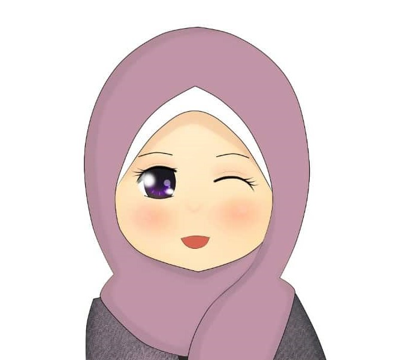

Tim Kami
Tim profesional akan senang hati membantu anda
Amira
Team Lead


Eliza
Developer

Dalia
Developer
Selamat datang di website resmi Pesantren AS-Salam, tempat belajar dan berkembang untuk generasi muslim yang unggul dan berakhlak mulia. Pesantren AS-Salam didirikan pada tahun 1980 oleh KH Ahmad Abdullah dengan tujuan menyebarkan ilmu pengetahuan dan nilai-nilai Islam yang seimbang. Pesantren AS-Salam memiliki sejarah panjang yang melibatkan perjuangan dan dedikasi dalam penyelenggaraan pendidikan Islam. Inilah kisah singkat tentang bagaimana pesantren ini berdiri.
Pada tahun 1978, seorang ulama dan pendidik Islam bernama KH Ahmad Abdullah merasakan urgensi untuk mendirikan sebuah lembaga pendidikan Islam yang dapat menjadi pusat pengembangan ilmu pengetahuan dan nilai-nilai keislaman. Kala itu, masyarakat di sekitar desa tempat tinggalnya, Desa Ilmu Jaya, sangat membutuhkan akses pendidikan Islam yang lebih terstruktur.
Dengan semangat dan tekad kuat, KH Ahmad Abdullah mulai mengumpulkan dukungan dari masyarakat setempat. Ia berbicara dengan para tokoh agama dan tokoh masyarakat, menyampaikan visi dan misinya untuk membentuk generasi muslim yang berkualitas. Dengan dorongan dan dukungan penuh dari mereka, langkah awal untuk mendirikan pesantren pun dimulai.
Pada tahun 1980, Yayasan Pendidikan AS-Salam resmi didirikan oleh KH Ahmad Abdullah bersama sejumlah tokoh masyarakat dan ulama setempat. Yayasan ini menjadi landasan hukum bagi penyelenggaraan pesantren dan berfungsi sebagai entitas yang mengelola berbagai aspek pendidikan, keuangan, dan administrasi.
Setelah mendapatkan dukungan yayasan, langkah selanjutnya adalah membangun infrastruktur pendidikan yang layak. Pada tahun 1982, gedung-gedung kelas, masjid, dan asrama mulai dibangun dengan swadaya masyarakat dan bantuan sumbangan dari para dermawan. Proses pembangunan ini membutuhkan perjuangan bersama, namun dengan semangat gotong royong, pesantren mulai mengambil bentuk.
Pesantren AS-Salam resmi diresmikan pada tanggal 10 Mei 1983, dalam sebuah acara yang dihadiri oleh tokoh-tokoh agama, tokoh masyarakat, dan para donatur. Pada saat itulah, pesantren mulai menerima santri pertamanya dan memulai peran aktifnya dalam memberikan pendidikan Islam yang berimbang antara ilmu pengetahuan umum dan ilmu agama.
Seiring berjalannya waktu, Pesantren AS-Salam terus berkembang dan mencapai berbagai prestasi dalam bidang pendidikan dan dakwah. Dengan semangat perjuangan dan tekad untuk terus berkontribusi pada pembangunan karakter dan keilmuan generasi muslim, pesantren ini tetap menjadi lembaga yang dicintai dan dihormati dalam masyarakat.
"Menjadi pusat pendidikan Islam yang unggul, berkualitas, dan berdaya saing global dengan mengutamakan akhlakul karimah."
Menyelenggarakan pendidikan Islam yang holistik dan berstandar internasional. Membentuk generasi muslim yang berakhlak mulia dan berkontribusi positif bagi masyarakat. Menumbuhkan semangat kecintaan pada ilmu pengetahuan dan keterampilan praktis. Menjalin kerjasama dengan lembaga pendidikan, pemerintah, dan masyarakat demi kemajuan bersama.
Tim profesional akan senang hati membantu anda
Team Lead
Developer
Developer